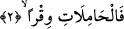

Mevlânâ Câmî şöyle demiştir:
Sabah rüzgârı, Necid tepelerini benim için ziyâret et ve öp,
Çünkü sevgilinin kokusu o temiz yerlerden geliyor.
Kemal Hucendî şöyle demiştir:
Sabâ rüzgârı dosttan bize bir haber getirir
Eski arkadaşları bir dost bir araya getirir
Bizim bu zayıf gözümüzü ağrı tutmuş
Sevgilinin ayağının toprağından sürme getirir.
Bazıları “zâriyat”dan muradın, doğurgan kadınlar olduğunu söylemişlerdir. Zîra o
kadınlar çok çocuk verirler. Bendeniz de bu manâdaki ince nokta hakkında diyorum ki;
“zâriyat”ın “hâmilât” ve “câriyât” kelimesine yakın getirilmesinden kasıt, zâriyât ile
hamile kadınlara teşbihte bulunulmasının hedeflenmesidir. Ve yine burada doğurgan olan
kadının kısır olana üstünlüğü de beyân edilmektedir. Nitekim Peygamber Efendimiz
(s.a.): “Siyah renkli ama doğurgan kadın, güzel ama kısır olandan daha hayırlıdır”[3]
buyurmuştur.
İşte buradaki siyah (çirkin) kadının üstünlüğünden maksad, bir siyah taştan ibaret olan
Hacer-i Esved’in diğer taşlara üstünlüğünde olduğu gibi doğurgan kadının üstünlüğünü
belirtmektir. Yâni doğurganlık bir üstünlüktür, bir fazilettir. Yine tefekkür sâhibi olup
pek çok eser veren (etrafına bilgi ve ışık saçan) yazara da velûd (üretken) yazar
denilmektedir. Ayrıca insân-ı kâmile de velûd insan denilmektedir. Velûd kelimesi
mübalağalı bir sıfat fiildir. Noksan yâni sâlih olmayan insana da câmid insan
denilmektedir. Burası, yaradılışla ilgili diğer âyetlerde olduğu gibi delil olsun diye
getirilmiştir.
2. Yükünü yüklenenlere,
“Vıkr” kelimesi, yük taşıyanlar anlamına gelmektedir. Bu da yağmuru taşıyan
(bulutları) kapsar. “Ağır bir yük olan yağmuru taşıyan (ve yağdıran) bulutlara kasem
olsun ki.”
Hâlid b. Mi’dan’ın şöyle dediği rivâyet edilmiştir: “Cennette bulutu oluşturan bir
ağaç vardır. Onun olgunlaşmış siyah yaprakları yağmuru nakleder, beyaz yaprakları ise
yağmuru nakletmez.”
Ka’b şöyle demiştir: “Bulut yağmurun eleğidir. Eğer bulut olmasaydı yağmur
yeryüzündeki bütün şeyleri helâk ederdi.”